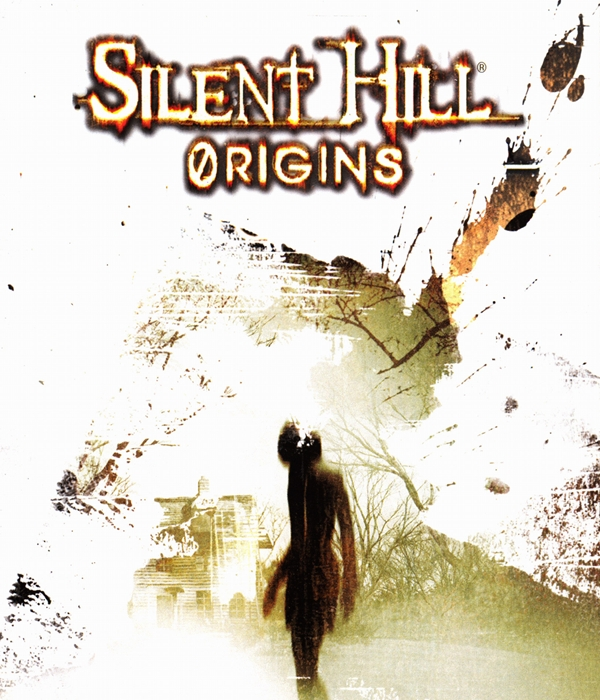
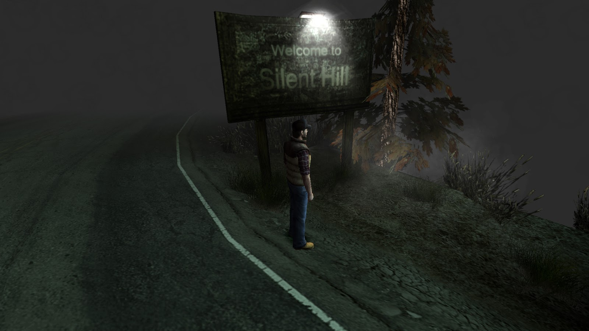

Silent Hill Origins
"Silent Hill: Origins" es un videojuego de terror psicológico desarrollado por Climax Studios y publicado por Konami. Fue lanzado originalmente para la consola PlayStation Portable (PSP) en 2007, y más tarde fue portado a PlayStation 2. El juego actúa como una precuela de la serie "Silent Hill", situándose antes de los eventos del primer juego.
La trama sigue a Travis Grady, un camionero atormentado por visiones y recuerdos reprimidos, quien se ve obligado a detenerse en Silent Hill después de presenciar un accidente en la carretera. Mientras explora la ciudad neblinosa, Travis descubre oscuros secretos que involucran a la familia Dahlia Gillespie, el culto religioso conocido como "The Order" y un misterioso incendio en una casa de huéspedes años atrás. A lo largo del juego, Travis se enfrenta a criaturas terroríficas y explora diferentes áreas de Silent Hill, incluyendo su hospital psiquiátrico abandonado, el sanatorio Cedar Grove y el Teatro Artaud. A medida que avanza, Travis descubre pistas sobre su propio pasado y su conexión con Silent Hill, así como la verdad detrás de los horrores que han plagado la ciudad.
"Silent Hill: Origins" es conocido por su atmósfera inquietante, su narrativa envolvente y su enfoque en el horror psicológico. El juego recibió críticas generalmente favorables por parte de los críticos y los fanáticos de la serie por su capacidad para capturar la esencia de los juegos anteriores de "Silent Hill" mientras introduce nuevas mecánicas de juego y una historia intrigante.
La historia de Travis Grady comienza mucho antes de su llegada a Silent Hill. Criado en un ambiente de negligencia y abuso, Travis se convierte en un camionero solitario, viajando por carreteras solitarias mientras lidia con los traumas de su pasado. Durante uno de sus viajes, presencia un accidente en la carretera y se ve obligado a detenerse en Silent Hill. Una vez en la ciudad, Travis se ve envuelto en una pesadilla surrealista. Encuentra la casa de huéspedes donde tuvo lugar un misterioso incendio años atrás, un evento que parece estar en el centro de los oscuros secretos de la ciudad. A medida que explora, Travis se enfrenta a figuras aterradoras y criaturas de pesadilla, todas las cuales parecen ser manifestaciones de sus propios miedos y traumas internos.
Durante su búsqueda de respuestas, Travis se encuentra con personajes como Dahlia Gillespie, la enigmática líder del culto religioso conocido como "The Order", así como el detective Michael Kaufmann, quien parece tener sus propios motivos para estar en Silent Hill. A través de encuentros con estos personajes y la exploración de la ciudad, Travis comienza a desentrañar la verdad detrás de los eventos que han plagado a Silent Hill durante años.
A medida que la historia avanza, Travis descubre su propia conexión con la ciudad y los oscuros secretos de su pasado. Enfrenta desafíos tanto físicos como mentales mientras lucha por descubrir la verdad y escapar de la pesadilla que lo ha consumido. Al final, Travis se ve obligado a enfrentarse a sus propios demonios internos mientras lucha por sobrevivir en un mundo distorsionado por la influencia maligna de Silent Hill.
"Silent Hill: Origins" explora temas de redención, culpa y la naturaleza de la realidad. A través de su protagonista atormentado y la atmósfera opresiva de la ciudad, el juego ofrece una experiencia inquietante y emocionalmente intensa que ha dejado una impresión duradera en los fanáticos de la serie "Silent Hill".
